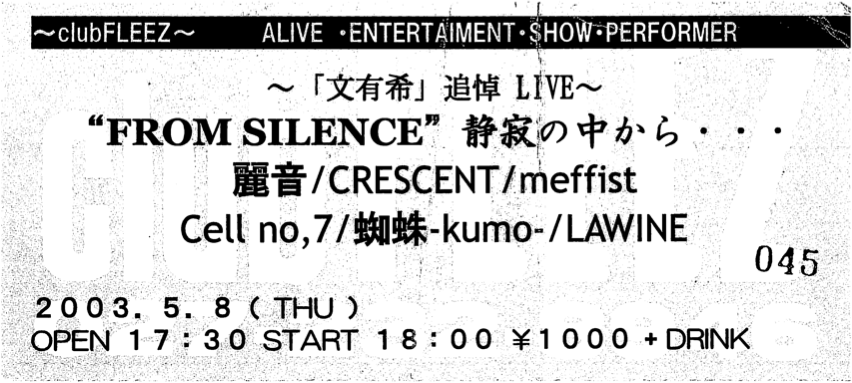

CRESCENT, meffist, Cell no,7, 蜘蛛, LAWINE
2003年4月に死去した文有希の追悼ライブ。麗音が解散してからこんな形で麗音が再結成されるとは、誰も思って無かった事でしょう……。
文有希の代わりに歌ったのは文有希の後輩である蜘蛛の佳樹。
MCで佳樹さんが "文有希が死んだら佳樹が麗音の「less」を演る、佳樹が死んだら文有希が蜘蛛の「forever」を演る" みたいな約束をしていたことを語っていました。文有希さんと佳樹さんとの間にある深い信頼を感じました。
しかし、この日になってもまだ自分は文有希が死んだ事を認められず、一生懸命ステージで演奏してくれた麗音の皆様には悪いけどライブ中ずっと後ろの文有希の写真を見てました。ただ不思議な時間が過ぎていくだけ……。死んだって心の中で認められないままライブが終わってしまいました。公演終了後に文有希へのお別れ会がありましたが、文有希が死んだという事実をどうしても頭が受け入れてくれなくて、行かないで逃げてしまいました……。